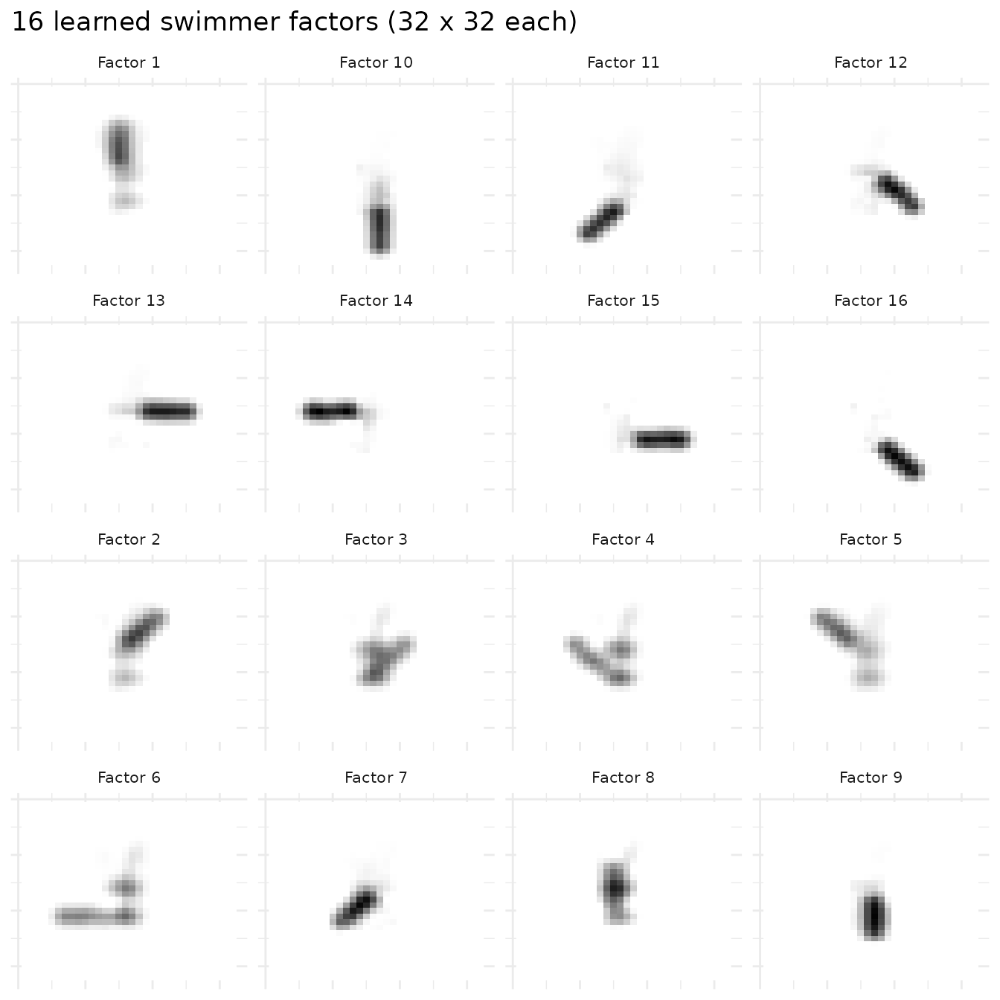
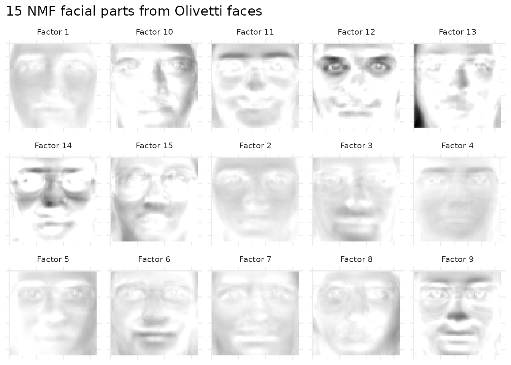
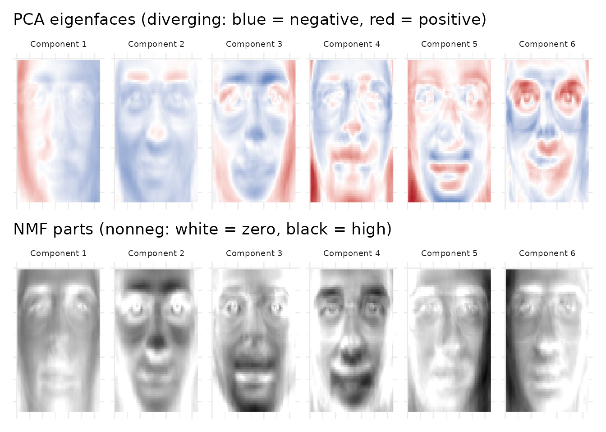

Image Decomposition: Learning Visual Parts
Source:vignettes/image-decomposition.Rmd
image-decomposition.RmdParts-Based Representation
Lee & Seung’s 1999 Nature paper demonstrated that NMF learns parts-based representations of images — decomposing faces into eyes, noses, and mouths rather than the holistic “eigenfaces” produced by PCA. The key insight is that nonnegativity forces factors to add features rather than cancel them. Each factor captures a localized “part,” and every image is a nonneg combination of these parts.
PCA components have positive and negative values, producing global modes (illumination, expression) that require cancellation to reconstruct specific images. NMF factors are strictly nonneg — each one is a recognizable building block. This vignette makes that distinction visually concrete.
API Reference
Swimmer Benchmark
simulateSwimmer(n_images = 256, style = c("stick", "gaussian"),
sigma = 1.5, noise = 0, seed = NULL, return_factors = FALSE)Generates 32×32 stick figure images with 4 limbs, each in 4 positions
(true rank = 16). When return_factors = TRUE, returns the
true W and H matrices for quantitative validation.
Theory
In the NMF model (pixels × images), each column of W is a “part image” and each row of H encodes which images contain that part. The nonnegativity constraints , mean each image is built by summing parts — like assembling a face from shapes.
PCA’s unconstrained components capture variance-maximizing directions (global illumination, expression), which mix positive and negative values. NMF parts capture localized features (eyes, nose, forehead). NMF is more interpretable per factor, though PCA may achieve lower reconstruction error per component.
Example 1: The Swimmer Benchmark
The swimmer dataset is the gold standard for testing parts-based learning. Each image is a 32×32 stick figure with a fixed torso and four limbs in various positions. The true rank is 16 (4 limbs × 4 positions each).
sim <- simulateSwimmer(256, style = "gaussian", sigma = 1.5, seed = 42,
return_factors = TRUE)
A <- t(sim$A) # 1024 pixels x 256 images
model_swim <- nmf(A, k = 16, seed = 42, maxit = 100, L1 = c(0.1, 0))
# Match learned factors to ground truth
# sim$h is 16 x 1024 (true factor images as rows)
# model@w is 1024 x 16 (learned factor images as columns)
cost <- matrix(0, 16, 16)
for (i in 1:16) {
for (j in 1:16) {
a <- model_swim@w[, i]
b <- sim$h[j, ]
cost[i, j] <- 1 - sum(a * b) / (sqrt(sum(a^2)) * sqrt(sum(b^2)))
}
}
match_swim <- bipartiteMatch(cost)
# Cosine similarities for matched pairs
cos_sims <- sapply(1:16, function(i) {
j <- match_swim$assignment[i] + 1L
a <- model_swim@w[, i]
b <- sim$h[j, ]
sum(a * b) / (sqrt(sum(a^2)) * sqrt(sum(b^2)))
})
match_table <- data.frame(
`Factor` = 1:8,
`Cosine Similarity` = sort(cos_sims, decreasing = TRUE)[1:8],
check.names = FALSE
)
knitr::kable(match_table, digits = 3,
caption = "Top 8 learned factors matched to ground truth (cosine similarity)")| Factor | Cosine Similarity |
|---|---|
| 1 | 0.952 |
| 2 | 0.929 |
| 3 | 0.929 |
| 4 | 0.924 |
| 5 | 0.924 |
| 6 | 0.921 |
| 7 | 0.917 |
| 8 | 0.917 |
NMF recovers the swimmer factors with high cosine similarity. Light L1 regularization helps isolate each limb position cleanly.
# 4x4 grid of all 16 learned factors
plot_data <- do.call(rbind, lapply(1:16, function(fi) {
vals <- model_swim@w[, fi]
grid <- expand.grid(x = 1:32, y = 1:32)
grid$value <- vals
grid$factor <- paste("Factor", fi)
grid
}))
ggplot(plot_data, aes(x = x, y = y, fill = value)) +
geom_raster() +
scale_fill_gradient(low = "white", high = "black") +
scale_y_reverse() +
facet_wrap(~ factor, ncol = 4) +
theme_minimal() +
theme(axis.text = element_blank(), axis.ticks = element_blank(),
axis.title = element_blank(), legend.position = "none",
strip.text = element_text(size = 8)) +
ggtitle("16 learned swimmer factors (32 x 32 each)")
Each factor captures a specific limb position — the torso base plus individual arm and leg configurations. NMF has decomposed the images into their generative parts.
Example 2: Facial Parts (Olivetti)
The Olivetti faces dataset contains 400 grayscale images (64×64) of 40 subjects. Applying NMF reveals interpretable facial parts.
data(olivetti)
img_shape <- attr(olivetti, "image_shape") # c(64, 64)
A_faces <- t(olivetti[1:200, ]) # 4096 pixels x 200 images
model_faces <- nmf(A_faces, k = 15, seed = 42, maxit = 100)
nrow_px <- img_shape[1]
ncol_px <- img_shape[2]
face_data <- do.call(rbind, lapply(1:15, function(fi) {
vals <- model_faces@w[, fi]
grid <- expand.grid(x = 1:ncol_px, y = 1:nrow_px)
grid$value <- vals
grid$factor <- paste("Factor", fi)
grid
}))
ggplot(face_data, aes(x = x, y = y, fill = value)) +
geom_raster() +
scale_fill_gradient(low = "white", high = "black") +
scale_y_reverse() +
facet_wrap(~ factor, ncol = 5) +
theme_minimal() +
theme(axis.text = element_blank(), axis.ticks = element_blank(),
axis.title = element_blank(), legend.position = "none",
strip.text = element_text(size = 8)) +
ggtitle("15 NMF facial parts from Olivetti faces")
Each factor highlights a different facial region — some capture eye areas, others noses and mouths, others forehead and hair patterns. These nonneg building blocks combine additively to reconstruct any face in the dataset.
Example 3: NMF vs PCA — Parts vs Eigenfaces
The clearest way to see why nonnegativity matters is to compare NMF parts against PCA eigenfaces on the same data.
# PCA on the same data (6 components for comparison)
pca_model <- pca(A_faces, k = 6, seed = 42)
nmf_model <- nmf(A_faces, k = 6, seed = 42, maxit = 100)
# Build comparison data
make_image_df <- function(mat_cols, ncol_factors, method, nrow_px, ncol_px) {
do.call(rbind, lapply(1:ncol_factors, function(fi) {
vals <- mat_cols[, fi]
grid <- expand.grid(x = 1:ncol_px, y = 1:nrow_px)
grid$value <- vals
grid$factor <- paste("Component", fi)
grid$method <- method
grid
}))
}
pca_data <- make_image_df(pca_model@u, 6, "PCA (eigenfaces)", nrow_px, ncol_px)
nmf_data <- make_image_df(nmf_model@w, 6, "NMF (parts)", nrow_px, ncol_px)
p_pca <- ggplot(pca_data, aes(x = x, y = y, fill = value)) +
geom_raster() +
scale_fill_gradient2(low = "#2166ac", mid = "white", high = "#b2182b", midpoint = 0) +
scale_y_reverse() +
facet_wrap(~ factor, ncol = 6) +
theme_minimal() +
theme(axis.text = element_blank(), axis.ticks = element_blank(),
axis.title = element_blank(), legend.position = "none",
strip.text = element_text(size = 7)) +
ggtitle("PCA eigenfaces (diverging: blue = negative, red = positive)")
p_nmf <- ggplot(nmf_data, aes(x = x, y = y, fill = value)) +
geom_raster() +
scale_fill_gradient(low = "white", high = "black") +
scale_y_reverse() +
facet_wrap(~ factor, ncol = 6) +
theme_minimal() +
theme(axis.text = element_blank(), axis.ticks = element_blank(),
axis.title = element_blank(), legend.position = "none",
strip.text = element_text(size = 7)) +
ggtitle("NMF parts (nonneg: white = zero, black = high)")
p_pca / p_nmf
PCA eigenfaces show global patterns with positive and negative values — the first component captures mean illumination, subsequent ones capture global expression modes through cancellation. NMF parts show localized features with strictly nonneg values — each is a recognizable subset of the face (eyes, nose, jaw, forehead). NMF components are more interpretable as “building blocks” of faces, directly illustrating the parts-based learning that nonnegativity enables.
What’s Next
- See the Regularization vignette for L1 sparsity to sharpen parts and angular decorrelation.
- See the NMF Fundamentals vignette for the core NMF API.